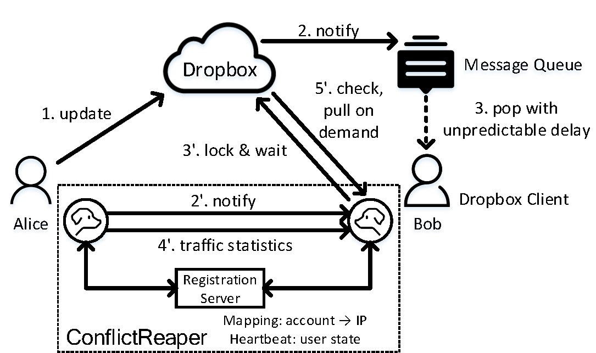
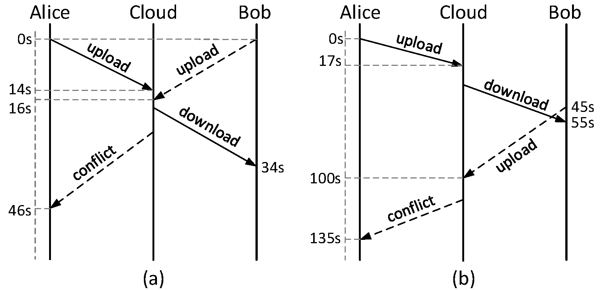
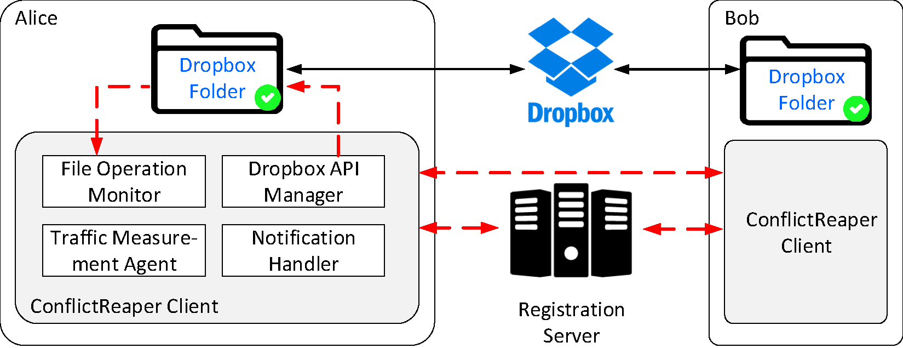

This project strives towards conflict-free collaborations with cloud storage services.
Cloud storage has become a basic infrastructure to provide storage services with high elasticity, reliability, availability, and security guarantees.
In addition, some services (e.g., Dropbox) offer more advanced functions such as collaborative file editing (abbreviated as collaboration) where multiple users can edit a shared file via the cloud storage.
Specifically, in Dropbox, every user owns a designated local folder (called a "sync folder") in which every data update is automatically noticed and synced to the cloud by the Dropbox client software.
Afterwards, the data update is automatically propagated by the cloud to the sync folder(s) of the other user(s) who share the file (called collaborators).
When everything goes smooth, using Dropbox for collaborations is much easier than using classic collaboration tools like SVN and Git, since the users do not need to understand and manipulate the complex collaboration primitives (e.g., pull, push, comment, and clone).
This greatly facilitates those computer non-professionals in online collaborations.
Figure 1: Architectural overview of Dropbox and ConflictReaper on handling cross-user collaborations.
Through real-word measurement study, we find the two root causes of collaboration conflicts in Dropbox:
1) Unlike SVN and Git, Dropbox never locks an edited file to avoid conflicts during collaboration;
2) Dropbox only guarantees eventual data consistency among the collaborators, thus significantly aggravating the probability of conflicts.
Figure 2: Time sequence diagram of (a) a typical simultaneous edit and (b) a typical alternate edit.
We design the ConflictReaper to enable conflict-free collaborations with cloud storage services.
The design of ConflictReaper is empowered by three key findings and measures.
1) Although the end-to-end sync delay is unpredictable due to eventual consistency, we can always track the latest version of an edited file by actively resorting to the cloud via certain web APIs.
2) Although all application-level data is encrypted in Dropbox, we can roughly deduce the sync status from traffic statistics.
3) By applying a couple of useful mechanisms (e.g., distributed architecture and data lock) inspired from Git, we can effectively and efficiently avoid collaboration conflicts.
Figure 3: System structure of ConflictReaper with modularized components.